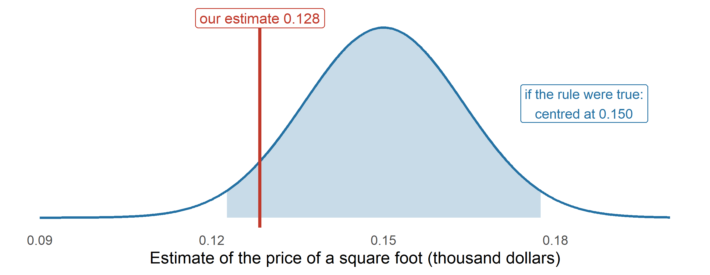
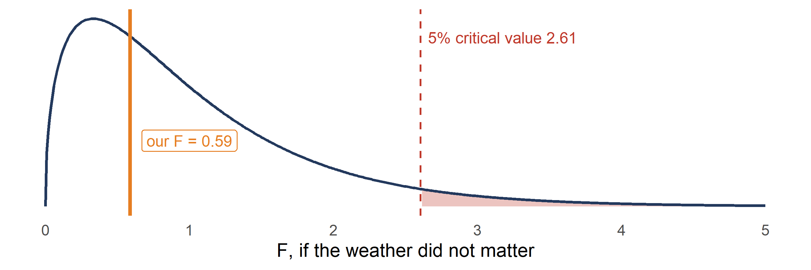
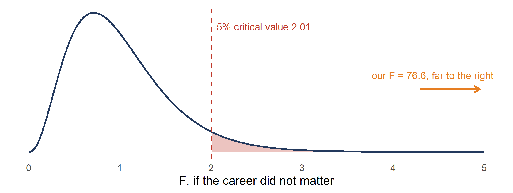
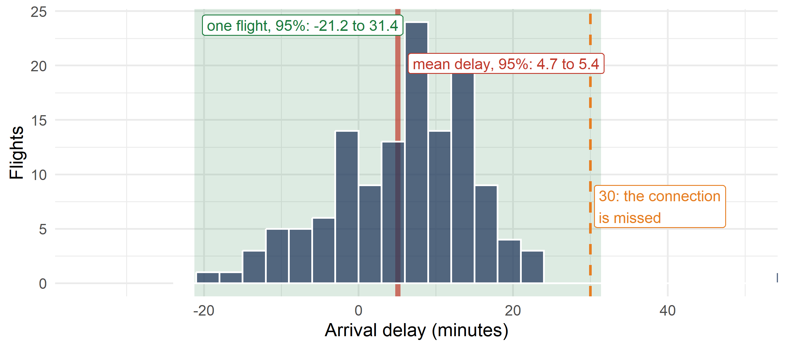
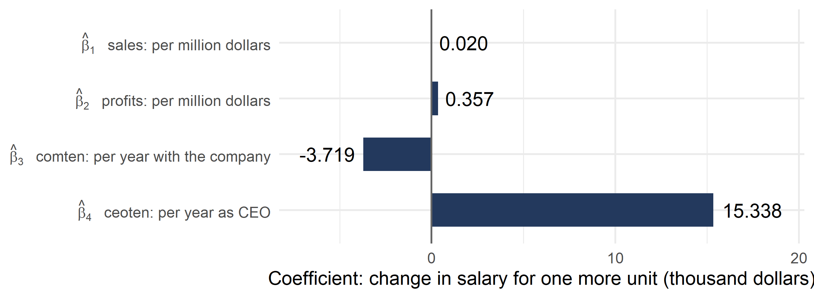
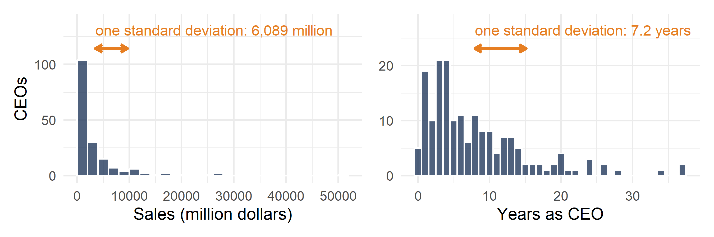
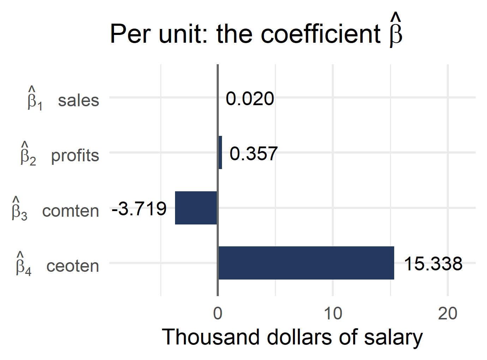
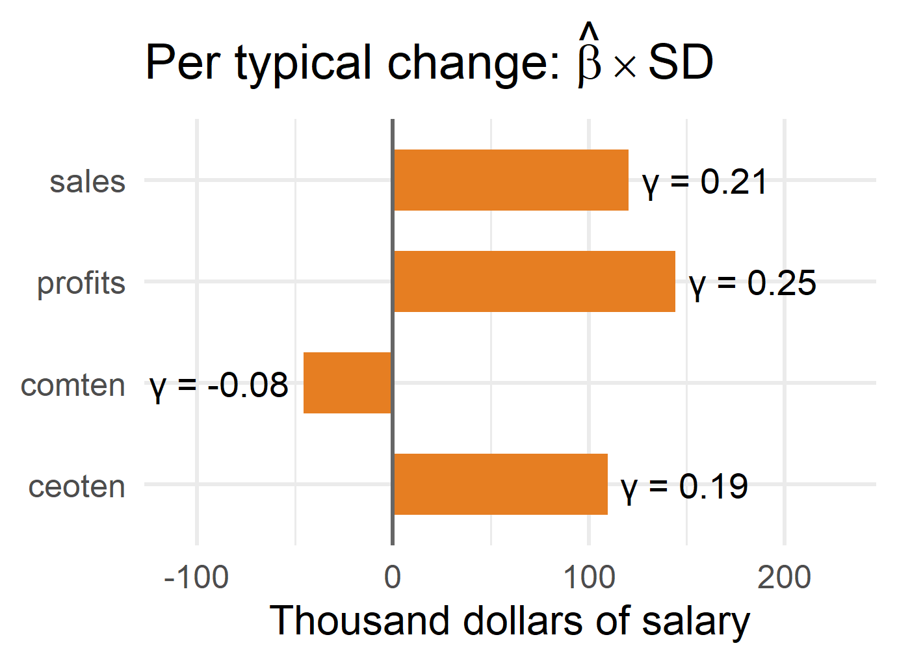
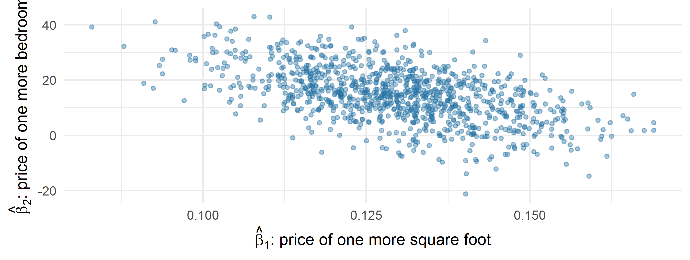

Business Forecasting
Two numbers from the last two weeks, each from one regression:
| Decision | The number |
|---|---|
| A student chooses between medicine and teaching | Right after graduating, a doctor earns 495 pesos a month more than a teacher (week 11) |
| An airline decides whether to hold a connecting flight for a plane from Monterrey that left 40 minutes late | The regression predicts it lands 5 minutes late (week 10’s flights) |
Each number comes from one sample; another sample would give another number. Before acting on them we need to quantify how certain we are: how far each number could be from the truth, and how far one forecast could miss.
Every coefficient has a variance, and every pair of coefficients has a covariance. One matrix holds them all.
In week 8 the slope changed from sample to sample, and its variance measured by how much. With several regressors every coefficient moves, so we need:
With \(k\) regressors there are \(k + 1\) coefficients. One matrix holds all of it:
\[\text{Cov}(\hat{\boldsymbol\beta}) = \begin{bmatrix} {\color{#2471a3}{\cssId{mt-cv-v0}{\text{Var}(\hat\beta_0)}}} & {\color{#e67e22}{\text{Cov}(\hat\beta_0, \hat\beta_1)}} & \cdots & {\color{#e67e22}{\text{Cov}(\hat\beta_0, \hat\beta_k)}} \\ {\color{#e67e22}{\text{Cov}(\hat\beta_1, \hat\beta_0)}} & {\color{#2471a3}{\cssId{mt-cv-v1}{\text{Var}(\hat\beta_1)}}} & \cdots & {\color{#e67e22}{\cssId{mt-cv-c1k}{\text{Cov}(\hat\beta_1, \hat\beta_k)}}} \\ \vdots & \vdots & \ddots & \vdots \\ {\color{#e67e22}{\text{Cov}(\hat\beta_k, \hat\beta_0)}} & {\color{#e67e22}{\text{Cov}(\hat\beta_k, \hat\beta_1)}} & \cdots & {\color{#2471a3}{\text{Var}(\hat\beta_k)}} \end{bmatrix}\]
vcov(reg).For now, the variances. The covariances matter when we test a difference or a sum of two coefficients; section 3 explains them.
We want the best estimates: right on average, and moving as little as possible from sample to sample. So three questions: is OLS unbiased? What is its variance? Is that the smallest?
Is OLS unbiased? Start from the OLS formula of week 10.
\(\displaystyle \hat{\boldsymbol\beta} = (\mathbf{X}^\top\mathbf{X})^{-1}\mathbf{X}^\top\mathbf{y}\)
Start: the OLS formula Week 10. \(\mathbf{X}\) holds the regressors, with a column of 1s for the intercept.
\(\displaystyle = (\mathbf{X}^\top\mathbf{X})^{-1}\mathbf{X}^\top \big({\color{#2471a3}{\mathbf{X}\boldsymbol\beta}} + {\color{#e67e22}{\mathbf{u}}}\big)\)
Plug in the model \(\mathbf{y} = {\color{#2471a3}{\mathbf{X}\boldsymbol\beta}} + {\color{#e67e22}{\mathbf{u}}}\): a fixed part and the random errors.
\(\displaystyle = {\color{#c0392b}{(\mathbf{X}^\top\mathbf{X})^{-1}\mathbf{X}^\top\mathbf{X}}}\,\boldsymbol\beta + (\mathbf{X}^\top\mathbf{X})^{-1}\mathbf{X}^\top{\color{#e67e22}{\mathbf{u}}}\)
Multiply out \(\mathbf{A}(\mathbf{B} + \mathbf{C}) = \mathbf{A}\mathbf{B} + \mathbf{A}\mathbf{C}\), as with numbers.
\(\displaystyle = \boxed{\boldsymbol\beta + \cssId{mt-tn-w}{(\mathbf{X}^\top\mathbf{X})^{-1}\mathbf{X}^\top}\,{\color{#e67e22}{\mathbf{u}}}}\)
A matrix times its inverse \({\color{#c0392b}{(\mathbf{X}^\top\mathbf{X})^{-1}(\mathbf{X}^\top\mathbf{X})}} = \mathbf{I}\), like \(\frac{1}{a} \times a = 1\). And \(\mathbf{I}\boldsymbol\beta = \boldsymbol\beta\).
Each estimate is the true coefficient plus a weighted sum of the errors. Another sample brings other errors, and so another estimate.
\(\displaystyle E(\hat{\boldsymbol\beta}) = E\big(\boldsymbol\beta + {\color{#2471a3}{(\mathbf{X}^\top\mathbf{X})^{-1}\mathbf{X}^\top}}{\color{#e67e22}{\mathbf{u}}}\big)\)
Start: the truth plus noise From the previous slide.
\(\displaystyle = \boldsymbol\beta + {\color{#2471a3}{(\mathbf{X}^\top\mathbf{X})^{-1}\mathbf{X}^\top}}\,E({\color{#e67e22}{\mathbf{u}}})\)
Fixed numbers come out of E \(E(a + bY) = a + b\,E(Y)\). The regressors are fixed numbers, and so is \(\boldsymbol\beta\).
\(\displaystyle = \boldsymbol\beta + {\color{#2471a3}{(\mathbf{X}^\top\mathbf{X})^{-1}\mathbf{X}^\top}}\,{\color{#c0392b}{\mathbf{0}}} = \boxed{\boldsymbol\beta}\)
The errors have mean zero \(E(u_i) = 0\) for every observation.
Every coefficient is unbiased. This used only \(E(\mathbf{u}) = \mathbf{0}\) and that \((\mathbf{X}^\top\mathbf{X})^{-1}\) exists (full rank, week 10). Not constant variance, not normality.
How much does \(\hat{\boldsymbol\beta}\) move? Start again from the truth plus noise.
\(\displaystyle \text{Cov}(\hat{\boldsymbol\beta}) = \text{Cov}\big({\color{#2471a3}{(\mathbf{X}^\top\mathbf{X})^{-1}\mathbf{X}^\top}}{\color{#e67e22}{\mathbf{u}}}\big)\)
Only the errors are random \(\boldsymbol\beta\) is fixed: \(\text{Var}(c + Z) = \text{Var}(Z)\), as in week 8.
\(\displaystyle = {\color{#2471a3}{(\mathbf{X}^\top\mathbf{X})^{-1}\mathbf{X}^\top}}\ \cssId{mt-cu}{\text{Cov}({\color{#e67e22}{\mathbf{u}}})}\ {\color{#2471a3}{\mathbf{X}(\mathbf{X}^\top\mathbf{X})^{-1}}}\)
Fixed numbers come out squared One number: \(\text{Var}(aY) = a^2\,\text{Var}(Y)\). A matrix \(\mathbf{A}\): \(\text{Cov}(\mathbf{A}\mathbf{u}) = \mathbf{A}\,\text{Cov}(\mathbf{u})\,\mathbf{A}^\top\), with its transpose on the right.
\(\displaystyle = {\color{#2471a3}{(\mathbf{X}^\top\mathbf{X})^{-1}\mathbf{X}^\top}}\ {\color{#1b7a3d}{\sigma^2\mathbf{I}}}\ {\color{#2471a3}{\mathbf{X}(\mathbf{X}^\top\mathbf{X})^{-1}}}\)
Same variance, no correlation \(\sigma^2\) on the diagonal (homoskedasticity), 0 everywhere else (errors uncorrelated).
\(\displaystyle = {\color{#1b7a3d}{\sigma^2}}\ (\mathbf{X}^\top\mathbf{X})^{-1}\,{\color{#c0392b}{\mathbf{X}^\top\mathbf{X}(\mathbf{X}^\top\mathbf{X})^{-1}}}\)
σ² is one number A number can move to the front of a product of matrices.
\(\displaystyle = \boxed{{\color{#1b7a3d}{\sigma^2}}\,(\mathbf{X}^\top\mathbf{X})^{-1}}\)
A matrix times its inverse The red part is \(\mathbf{I}\).
The week-8 formula \(\sigma^2 / S_{xx}\) is the one-regressor case. One regressor: back to week 8
We never see the errors, so \(\sigma^2\) is unknown. As in week 8, we estimate it from the residuals:
\[s^2 = \frac{\cssId{mt-s2-sse}{SSE}}{\cssId{mt-s2-df}{n - k - 1}} \qquad\qquad \widehat{\text{Cov}}(\hat{\boldsymbol\beta}) = s^2\,(\mathbf{X}^\top\mathbf{X})^{-1} = \texttt{vcov(reg)}\]
The standard error of coefficient \(j\) is the square root of its diagonal element:
\[SE(\hat\beta_j) = s\,\sqrt{\cssId{mt-s2-jj}{\big[(\mathbf{X}^\top\mathbf{X})^{-1}\big]_{j+1,\,j+1}}}\]
In R: vcov(reg)[j + 1, j + 1]^0.5.
SSE has \(n - k - 1\) degrees of freedom. With one \(x\) it was \(n - 2\) (week 8). With more regressors we lose more: before we can compute the residuals, we first estimate \(k + 1\) coefficients from the same \(n\) observations, and each costs one degree of freedom.
houses (week 10, Exercise 2) holds 88 house sales: houses$price in thousands of dollars, houses$sqrft (size, square feet) and houses$bdrms (bedrooms). Regress price on size and bedrooms, by hand.
sqrft, then bdrms. Build \(\mathbf{y}\) from price.lm(): summary(reg) and vcov(reg).cbind(1, a, b) puts columns side by side. t(X) is the transpose, %*% multiplies two matrices, and solve(A) is the inverse of A. V[2, 2]^0.5 is the square root of the element in row 2, column 2.
X <- cbind(1, houses$sqrft, houses$bdrms)
y <- houses$price
n <- 88
XtX <- t(X) %*% X
XtX
XtX_inv <- solve(XtX)
XtX_inv
b <- XtX_inv %*% t(X) %*% y
b
e <- y - X %*% b
s2 <- (t(e) %*% e) / (n - 3)
s2
V <- s2[1, 1] * XtX_inv
V
V[1, 1]^0.5
V[2, 2]^0.5
V[3, 3]^0.5
reg <- lm(price ~ sqrft + bdrms, data = houses)
summary(reg)
vcov(reg)1–2. \(\mathbf{X}\) has 88 rows and 3 columns, so \(\mathbf{X}^\top\mathbf{X}\) is 3 × 3: \(n = 88\), the sums of the regressors (177,205 square feet, 314 bedrooms), and the sums of their squares and products.
\(\hat{\boldsymbol\beta} = (-19.31,\ 0.1284,\ 15.20)\): the Estimate column of summary().
\(s^2 = 3,974.7\) on \(88 - 3 = 85\) degrees of freedom; \(s = 63.04\), the Residual standard error.
5–6. \(s^2(\mathbf{X}^\top\mathbf{X})^{-1}\) is vcov(reg), number for number. Standard errors \(31.05\), \(0.0138\) and \(9.48\): the Std. Error column.
What Exercise 1 found: \(s^2\) times \((\mathbf{X}^\top\mathbf{X})^{-1}\) is vcov(reg).
\[\underbrace{3,974.7}_{s^2} \times \underbrace{\begin{bmatrix} 0.243 & -3.43 \times 10^{-5} & -0.0454 \\ -3.43 \times 10^{-5} & 4.81 \times 10^{-8} & -1.75 \times 10^{-5} \\ -0.0454 & -1.75 \times 10^{-5} & 0.0226 \end{bmatrix}}_{(\mathbf{X}^\top\mathbf{X})^{-1}}\]
\[= \underbrace{\begin{bmatrix} {\color{#2471a3}{964}} & -0.136 & -181 \\ -0.136 & {\color{#2471a3}{\cssId{mt-fv-dep}{1.91 \times 10^{-4}}}} & {\color{#e67e22}{\cssId{mt-fv-cov}{-0.0697}}} \\ -181 & {\color{#e67e22}{-0.0697}} & {\color{#2471a3}{89.9}} \end{bmatrix}}_{\texttt{vcov(reg)}}\]
Is this variance the smallest possible? The assumptions of week 8, written for several regressors:
| Assumption | With one regressor (week 8) | With several regressors |
|---|---|---|
| 1. Linear in the coefficients | \(y_i = \beta_0 + \beta_1 x_i + u_i\) | \(\mathbf{y} = \mathbf{X}\boldsymbol\beta + \mathbf{u}\) |
| 2. Errors with mean zero | \(E(u_i) = 0\) | \(E(\mathbf{u}) = \mathbf{0}\) |
| 3. Same variance | \(\text{Var}(u_i) = \sigma^2\) | \(\text{Cov}(\mathbf{u}) = \sigma^2\mathbf{I}\): \(\sigma^2\) on the diagonal |
| 4. Uncorrelated errors | \(\text{Cov}(u_i, u_j) = 0\) | \(\text{Cov}(\mathbf{u}) = \sigma^2\mathbf{I}\): 0 off the diagonal |
| 5. No copies | \(x\) is not constant: \(S_{xx} > 0\) | full rank: no column a copy of the others (week 10) |
The same result as with one regressor: OLS is BLUE, the best linear unbiased estimator. For every coefficient, \(\text{Var}(\hat\beta_j) \le \text{Var}(\cssId{mt-gm-tilde}{\tilde\beta_j})\), for any other estimator that is linear and unbiased.
Does one regressor still matter once the others are held fixed? Is its coefficient equal to a number that matters?
Week 10, Exercise 2: houses holds 88 house sales in the Boston area, 1990 (wooldridge package, hprice1): price in thousands of dollars, sqrft (size, square feet) and bdrms (bedrooms).
| Regression | Bedroom slope (thousand dollars) |
|---|---|
| price on bdrms | 62.0 |
| price on sqrft and bdrms | 15.2 |
A developer can split the same space into more rooms. Keeping the size fixed, does the number of bedrooms still matter for the price? Or is 15.2 just luck of the sample?
\[H_0: \beta_{\text{bdrms}} = 0 \qquad \text{against} \qquad H_A: \beta_{\text{bdrms}} \neq 0\]
To test a claim about one coefficient, \(\beta_j = c\) for a number \(c\), with the other regressors held fixed:
\[T = \frac{\cssId{mt-t-num}{\hat\beta_j - c}}{\cssId{mt-t-se}{SE(\hat\beta_j)}} \sim \cssId{mt-t-df}{t_{n-k-1}}\]
| The claim | Hypotheses | p-value | In R |
|---|---|---|---|
| \(\beta_j\) differs from \(c\) | \(H_0: \beta_j = c\) against \(H_A: \beta_j \neq c\) | \(2\,P(t_{n-k-1} > \lvert T\rvert)\) | 2 * (1 - pt(T, df)) if \(T > 0\); 2 * pt(T, df) if \(T < 0\) |
| \(\beta_j\) is above \(c\) | \(H_0: \beta_j \le c\) against \(H_A: \beta_j > c\) | \(P(t_{n-k-1} > T)\) | 1 - pt(T, df) |
| \(\beta_j\) is below \(c\) | \(H_0: \beta_j \ge c\) against \(H_A: \beta_j < c\) | \(P(t_{n-k-1} < T)\) | pt(T, df) |
summary(reg) tests only \(H_0: \beta_j = 0\) against \(H_A: \beta_j \neq 0\). For any other number, or one side, build \(T\) yourself. Why n − k − 1
houses$price on houses$sqrft and houses$bdrms (\(n = 88\)).
summary(reg) and compute its standard error from vcov(reg).summary(reg).bdrms is row 3 of vcov(reg). The degrees of freedom are \(n - 3\). For a positive \(T\), the two-sided p-value is 2 * (1 - pt(t_stat, df)) and the one-sided 1 - pt(t_stat, df).
bdrms row of summary().The same t-test works for any coefficient, for example a category’s dummy. The flights of week 11: arrival delay on the departure delay, the scheduled time and the airline group; “Domestic” is the reference:
\[\text{arr_delay}_i = \beta_0 + \beta_1\,\text{dep_delay}_i + \beta_2\,\text{sched_time}_i + \beta_3\,\text{other}_i + \beta_4\,\text{us}_i + u_i\]
Do US airlines land later than Mexican ones, for the same departure delay and schedule? An airport assigning gates by airline needs to know. \(H_0: \beta_4 = 0\) against \(H_A: \beta_4 \neq 0\).
flights holds 11,887 arrivals at Mexico City airport, October 2025: flights$arr_delay and flights$dep_delay (minutes), flights$sched_time (scheduled minutes) and flights$carrier (“Domestic”, “Other foreign” or “US”).
arr_delay on dep_delay, sched_time and carrier. Which rows hold the two carrier dummies?vcov(reg), then the p-value. Find both in summary(reg).lm() turns the text column carrier into two dummies; “Domestic” comes first in alphabetical order and is left out. carrierUS is row 5 of vcov(reg).
carrierOther foreign) and 5 (carrierUS).| Dummy | Estimate | SE | T | p-value |
|---|---|---|---|---|
| other: Other foreign | 8.64 | 0.505 | 17.09 | below 0.0001 |
| us: US | 0.72 | 0.451 | 1.59 | 0.112 |
Or an interaction. The speed dating of week 11: how much a person likes a date (like, 1–10) on how attractive they find the date (attractive, 1–10), whether the person judging is a woman (female) and the product of the two:
\[\text{like}_i = \beta_0 + \beta_1\,\text{attractive}_i + \beta_2\,\text{female}_i + \beta_3\,\text{attractive}_i \times \text{female}_i + u_i\]
\(\beta_3\) is how much the slope on attractiveness changes when a woman judges. Do looks count the same for both? \(H_0: \beta_3 = 0\) against \(H_A: \beta_3 \neq 0\).
dating holds 544 ratings from speed dates: dating$like, dating$attractive (both 1–10) and dating$female (1 if a woman is judging).
dating$attractive_female, the product of attractive and female. Regress like on attractive, female and the product.vcov(reg), then the p-value. Then at the 1% level.The product is row 4 of vcov(reg). For a negative \(T\), the two-sided p-value is 2 * pt(t_stat, df). The slope for women is \(\hat\beta_1 + \hat\beta_3\).
| Estimate | SE | T | p-value | |
|---|---|---|---|---|
| (Intercept) | 1.911 | 0.300 | 6.37 | below 0.0001 |
| attractive | 0.714 | 0.043 | 16.47 | below 0.0001 |
| female | 0.788 | 0.402 | 1.96 | 0.0506 |
| attractive_female | -0.129 | 0.060 | -2.16 | 0.0312 |
Back to the houses: \(\text{price}_i = \beta_0 + \beta_1\,\text{sqrft}_i + \beta_2\,\text{bdrms}_i + u_i\).
A realtor prices extra space at 150 dollars per square foot, with the bedrooms held fixed: \(\beta_1 = 0.150\) thousand dollars. Too high, and listings sit unsold; too low, and sellers leave money on the table.
\[H_0: \beta_1 = 0.150 \qquad \text{against} \qquad H_A: \beta_1 \neq 0.150\]
\[T = \frac{\hat\beta_1 - 0.150}{SE(\hat\beta_1)} = \frac{0.1284 - 0.150}{0.0138} = -1.56\]
The t value of summary() tests 0, not 0.150: this \(T\) we build ourselves.

\[CI_{\beta_j} = \cssId{mt-ci-b}{\hat\beta_j} \pm \cssId{mt-ci-q}{t_{n-k-1,\,1-\alpha/2}} \times \cssId{mt-ci-se}{SE(\hat\beta_j)}\]
Back to the realtor. How much is one more square foot worth, with the bedrooms held fixed? Not one number: a range of values the data support.
houses$price (thousand dollars) on houses$sqrft and houses$bdrms (\(n = 88\)).
sqrft estimate from summary(reg) and compute its standard error from vcov(reg).sqrft is row 2 of vcov(reg). The degrees of freedom are \(n - k - 1\) with \(k = 2\). The two ends: the estimate minus and plus the critical value times the standard error.
\(\displaystyle \begin{aligned} \hat\beta_{\text{sqrft}} &= 0.1284 \\ SE(\hat\beta_{\text{sqrft}}) &= \sqrt{1.91 \times 10^{-4}} = 0.0138 \end{aligned}\)
The estimate and its standard error From summary(reg) and vcov(reg)[2, 2].
\(\displaystyle n - k - 1 = 88 - 2 - 1 = 85 \qquad t_{85,\,0.975} = 1.988\)
The critical value qt(0.975, 85): a little above 1.96, because \(n\) is small.
\(\displaystyle 1.988 \times 0.0138 = 0.0275\)
The margin of error How far the interval reaches on each side.
\(\displaystyle 0.1284 \pm 0.0275 = \boxed{[\,0.101,\ 0.156\,]}\)
The two ends 101 to 156 dollars per square foot, for the same number of bedrooms.
The realtor’s 0.150 is inside: the test of \(\beta_{\text{sqrft}} = 0.150\) does not reject (\(T = -1.56\)). 0.100 is outside: the test of \(\beta_{\text{sqrft}} = 0.100\) rejects (\(T = 2.06\)).
Is one coefficient bigger than another? Does a sum of two reach a target? One number built from two coefficients, and its standard error.
A developer designs new houses with a given living area and has space for one more room: a bedroom or a bathroom. Anglin and Gençay (1996) asked this with house sales in Windsor, Canada. houseprices holds 973 houses sold in Ames, Iowa, 2006–2010 (probstats4econ): the sale price in dollars, the bedrooms, the full bathrooms, and the living area in square feet.
\[\text{price}_i = \beta_0 + \cssId{mt-bb-b1}{\beta_1}\,\text{bedrooms}_i + \cssId{mt-bb-b2}{\beta_2}\,\text{bathrooms}_i + \beta_3\,\text{area}_i + u_i\]
Does one more bathroom add more to the price than one more bedroom? Both coefficients are in dollars per room, so we can compare them. The developer builds the room that adds more.
Write the hypotheses.
\[H_0: \beta_2 - \beta_1 = 0 \qquad \text{against} \qquad H_A: \beta_2 - \beta_1 \neq 0\]
Two-sided: either answer changes the design.
ceos holds 177 US chief executives (CEOs) in 1990, from the wooldridge package: salary in thousand dollars, the firm’s sales and profits in million dollars, the years the CEO has worked for the company (comten) and the years as its CEO (ceoten).
\[\text{salary}_i = \beta_0 + \cssId{mt-ceo-b1}{\beta_1}\,\text{sales}_i + \cssId{mt-ceo-b2}{\beta_2}\,\text{profits}_i + \beta_3\,\text{comten}_i + \beta_4\,\text{ceoten}_i + u_i\]
Shareholders want CEOs paid for profits, not for the size of the firm. Is one more million dollars of profit worth the same in salary as one more million of sales? Both are in million dollars, so we can compare them.
Write the hypotheses.
\[H_0: \beta_2 - \beta_1 = 0 \qquad \text{against} \qquad H_A: \beta_2 - \beta_1 \neq 0\]
Two-sided: if sales count more, a CEO gains from a bigger firm even when it earns less; if profits count more, pay follows what shareholders earn. Shareholders want to know either way.
We estimate the demand for eco-labelled apples: the pounds a household buys, on their own price (ecoprice) and the price of regular apples (regprice), both in cents per pound. apples holds 660 US households, from the wooldridge package (apple).
\[\text{pounds}_i = \beta_0 + \cssId{mt-ap-b1}{\beta_1}\,\text{ecoprice}_i + \cssId{mt-ap-b2}{\beta_2}\,\text{regprice}_i + u_i\]
A supermarket chain plans to raise the price of eco-labelled apples by 20 cents a pound and the price of regular apples by 10 cents. Will its customers buy a different amount of eco-labelled apples? The answer sets how many the stores order.
Which prices change, and by how much? Write the hypotheses.
ecoprice goes up by 20 and regprice by 10: the pounds change by \(20\beta_1 + 10\beta_2\).
\[H_0: 20\beta_1 + 10\beta_2 = 0 \qquad \text{against} \qquad H_A: 20\beta_1 + 10\beta_2 \neq 0\]
Two-sided: a higher eco-labelled price pushes buyers away, and a higher regular price pushes them toward eco-labelled apples. Either effect could be bigger.
Back to the CEOs:
\[\text{salary}_i = \beta_0 + \beta_1\,\text{sales}_i + \beta_2\,\text{profits}_i + \cssId{mt-cy-b3}{\beta_3}\,\text{comten}_i + \cssId{mt-cy-b4}{\beta_4}\,\text{ceoten}_i + u_i\]
A board is renewing its CEO’s contract. Does a CEO’s salary change with one more year in the job?
One more year in the job: which regressors change? Write the hypotheses.
Both: comten and ceoten each go up by 1, so the salary changes by \(\beta_3 + \beta_4\).
\[H_0: \beta_3 + \beta_4 = 0 \qquad \text{against} \qquad H_A: \beta_3 + \beta_4 \neq 0\]
| Example | The number we test | In \(H_0\) |
|---|---|---|
| Bedroom or bathroom? | \(\beta_2 - \beta_1\) | 0 |
| CEO pay: profits or sales? | \(\beta_2 - \beta_1\) | 0 |
| Eco-labelled apples | \(20\beta_1 + 10\beta_2\) | 0 |
| One more year in the job | \(\beta_3 + \beta_4\) | 0 |
Each is \(v\beta_a + w\beta_b\) with two numbers in front: \(v = w = 1\) in a sum, \(v = 1\) and \(w = -1\) in a difference, \(v = 20\) and \(w = 10\) for the apples. The test statistic is built as in section 2:
\[T = \frac{(v\hat\beta_a + w\hat\beta_b) - c}{\cssId{mt-tn-se}{SE(v\hat\beta_a + w\hat\beta_b)}}\]
summary(reg) gives each estimate with its own standard error, but it has no row for a sum or a difference. The new piece is \(SE(v\hat\beta_a + w\hat\beta_b)\).
\(\displaystyle \text{Var}(\hat\beta_a + \hat\beta_b) = \text{Var}(\hat\beta_a) + \text{Var}(\hat\beta_b) + 2\,{\color{#1b7a3d}{\cssId{mt-vs-cov}{\text{Cov}(\hat\beta_a, \hat\beta_b)}}}\)
A sum The two variances, plus twice the covariance: how the two estimates move together.
\(\displaystyle \text{Var}(\hat\beta_a - \hat\beta_b) = \text{Var}(\hat\beta_a) + \text{Var}(\hat\beta_b) {\color{#c0392b}{\ -\ 2\,\text{Cov}(\hat\beta_a, \hat\beta_b)}}\)
A difference A sum with \(-\hat\beta_b\): \(\text{Var}(-B) = \text{Var}(B)\), and \(\text{Cov}(A, -B) = -\text{Cov}(A, B)\).
\(\displaystyle \text{Var}({\color{#2471a3}{v}}\hat\beta_a + {\color{#2471a3}{w}}\hat\beta_b) = {\color{#2471a3}{v^2}}\,\text{Var}(\hat\beta_a) + {\color{#2471a3}{w^2}}\,\text{Var}(\hat\beta_b) + 2\,{\color{#2471a3}{vw}}\,\text{Cov}(\hat\beta_a, \hat\beta_b)\)
Numbers in front Each number is squared in its own variance and appears once in the covariance. The apples: \(v = 20\), \(w = 10\).
\(\displaystyle \boxed{SE(v\hat\beta_a + w\hat\beta_b) = \sqrt{v^2\,\cssId{mt-vd-va}{\text{Var}(\hat\beta_a)} + w^2\,\text{Var}(\hat\beta_b) + 2vw\,\cssId{mt-vd-cov}{\text{Cov}(\hat\beta_a, \hat\beta_b)}}}\)
Three numbers from vcov(reg) Two on the diagonal, one off it. vcov(reg) already has \(s^2\) in place of \(\sigma^2\).
A negative covariance makes a sum more precise and a difference less precise than the two standard errors suggest; a positive covariance, the other way round. See it in 1,000 samples Why: from the definition of a variance
\[T = \frac{(v\hat\beta_a + w\hat\beta_b) - c}{\sqrt{v^2\,\text{Var}(\hat\beta_a) + w^2\,\text{Var}(\hat\beta_b) + \cssId{mt-ds-cov}{2vw\,\text{Cov}(\hat\beta_a, \hat\beta_b)}}} \sim t_{n-k-1}\]
| The claim | Hypotheses |
|---|---|
| The gap between \(\beta_a\) and \(\beta_b\) is not \(c\) | \(H_0: \beta_a - \beta_b = c\) against \(H_A: \beta_a - \beta_b \neq c\) |
| \(\beta_a\) is more than \(c\) above \(\beta_b\) | \(H_0: \beta_a - \beta_b \le c\) against \(H_A: \beta_a - \beta_b > c\) |
| The sum is not \(c\) | \(H_0: \beta_a + \beta_b = c\) against \(H_A: \beta_a + \beta_b \neq c\) |
| The sum is above \(c\) | \(H_0: \beta_a + \beta_b \le c\) against \(H_A: \beta_a + \beta_b > c\) |
| With numbers in front, not \(c\) | \(H_0: v\beta_a + w\beta_b = c\) against \(H_A: v\beta_a + w\beta_b \neq c\) |
houseprices$saleprice on houseprices$bedroomabvgr (bedrooms), houseprices$fullbath (full bathrooms) and houseprices$grlivarea (living area, square feet), \(n = 973\).
summary(reg).vcov(reg).bedroomabvgr is row 2 of vcov(reg) and fullbath row 3. A difference subtracts 2 * vcov(reg)[2, 3] under the root. The degrees of freedom are \(n - 4\).
\(\hat\beta_2 - \hat\beta_1 = 26{,}756 - (-22{,}962) = 49{,}718\) dollars, with \(SE = 4{,}239\) and \(T = 11.73\): p-value below 0.001, reject.
apples$pounds on apples$ecoprice and apples$regprice (cents per pound), \(n = 660\). The eco-labelled price rises by 20 cents and the regular price by 10 cents.
summary(reg).vcov(reg). Is it positive or negative? Compute \(SE(20\hat\beta_1 + 10\hat\beta_2)\).ecoprice is row 2 of vcov(reg) and regprice row 3. Under the root, each variance is multiplied by its number squared, and the covariance by 2 * 20 * 10. The degrees of freedom are \(n - 3\).
reg <- lm(pounds ~ ecoprice + regprice, data = apples)
summary(reg)
vcov(reg)
n <- 660
change <- 20 * (-0.029265) + 10 * 0.030289
change
se_change <- (20^2 * vcov(reg)[2, 2] + 10^2 * vcov(reg)[3, 3] + 2 * 20 * 10 * vcov(reg)[2, 3])^0.5
se_change
t_stat <- change / se_change
t_stat
2 * pt(t_stat, df = n - 3)
se_0 <- (20^2 * vcov(reg)[2, 2] + 10^2 * vcov(reg)[3, 3])^0.5
change / se_0
2 * pt(change / se_0, df = n - 3)\(20\hat\beta_1 + 10\hat\beta_2 = -0.282\): after the two price rises, a household buys 0.28 pounds less of eco-labelled apples, about one fifth of the 1.47 pounds it buys on average.
| Cov | SE | T | p-value | At 5% | At 1% | |
|---|---|---|---|---|---|---|
| With the covariance | -0.0000347 | 0.0707 | -4.00 | < 0.001 | reject | reject |
| Without the covariance | left out | 0.1374 | -2.06 | 0.040 | reject | do not reject |
ceos$salary on ceos$sales, ceos$profits, ceos$comten and ceos$ceoten (\(n = 177\)).
summary(reg).vcov(reg). Is the covariance positive or negative?sales is row 2 of vcov(reg) and profits row 3. A difference subtracts 2 * vcov(reg)[2, 3] under the root. The degrees of freedom are \(n - 5\).
reg <- lm(salary ~ sales + profits + comten + ceoten, data = ceos)
summary(reg)
vcov(reg)
n <- 177
gap <- 0.35662 - 0.01979
gap
se_gap <- (vcov(reg)[2, 2] + vcov(reg)[3, 3] - 2 * vcov(reg)[2, 3])^0.5
se_gap
t_stat <- gap / se_gap
t_stat
2 * (1 - pt(t_stat, df = n - 5))
se_0 <- (vcov(reg)[2, 2] + vcov(reg)[3, 3])^0.5
gap / se_0
2 * (1 - pt(gap / se_0, df = n - 5))\(\hat\beta_2 - \hat\beta_1 = 0.357 - 0.020 = 0.337\): one more million dollars of profit goes with 337 dollars more salary than one more million of sales.
| Cov | SE | T | p-value | At 5% | |
|---|---|---|---|---|---|
| With the covariance | -0.00144 | 0.174 | 1.93 | 0.055 | do not reject |
| Without the covariance | left out | 0.166 | 2.03 | 0.044 | reject |
ceos$salary on ceos$sales, ceos$profits, ceos$comten and ceos$ceoten, as in Exercise 8. One more year in the job raises comten and ceoten by 1 each.
summary(reg).vcov(reg). Positive or negative?comten is row 4 of vcov(reg) and ceoten row 5. A sum adds 2 * vcov(reg)[4, 5] under the root.
reg <- lm(salary ~ sales + profits + comten + ceoten, data = ceos)
summary(reg)
vcov(reg)
n <- 177
total <- -3.71865 + 15.33754
total
se_total <- (vcov(reg)[4, 4] + vcov(reg)[5, 5] + 2 * vcov(reg)[4, 5])^0.5
se_total
t_stat <- total / se_total
t_stat
2 * (1 - pt(t_stat, df = n - 5))
se_0 <- (vcov(reg)[4, 4] + vcov(reg)[5, 5])^0.5
total / se_0
2 * (1 - pt(total / se_0, df = n - 5))\(\hat\beta_3 + \hat\beta_4 = -3.72 + 15.34 = 11.62\): one more year in the job goes with 11.6 thousand dollars more salary.
| Cov | SE | T | p-value | At 5% | |
|---|---|---|---|---|---|
| With the covariance | -6.65 | 5.85 | 1.99 | 0.048 | reject |
| Without the covariance | left out | 6.89 | 1.69 | 0.094 | do not reject |
| Test | Estimate | Covariance | SE | p-value | SE without the covariance | p-value |
|---|---|---|---|---|---|---|
| Bathroom − bedroom = 0 | 49,718 | -9,117 | 4,239 | < 0.001 | 4,237 | < 0.001 |
| 20 × eco price + 10 × regular price = 0 | -0.282 | -0.0000347 | 0.071 | < 0.001 | 0.137 | 0.040 |
| Profits − sales = 0 | 0.337 | -0.00144 | 0.174 | 0.055 | 0.166 | 0.044 |
| Years with the company + years as CEO = 0 | 11.62 | -6.65 | 5.85 | 0.048 | 6.89 | 0.094 |
More practice with two coefficients: Doctors against teachers Two years in a rental fleet Training or a new office? Bodega Aurrera or Chedraui?
nba holds 269 NBA players in the 1994–95 season, from the wooldridge package (nbasal): salary in thousand dollars a year, exper in years as a professional, and points, rebounds and assists per game.
\[\text{salary}_i = \beta_0 + \beta_1\,\text{exper}_i + \beta_2\,\text{points}_i + \beta_3\,\text{rebounds}_i + \beta_4\,\text{assists}_i + u_i\]
A player now scores 2 more points and gets 1 more rebound per game. The player’s agent asks the team for 200 thousand dollars a year more. Is 200 thousand what the market pays for that?
summary(reg).vcov(reg). Compute the standard error.points is row 3 of vcov(reg) and rebounds row 4. Under the root, each variance is multiplied by its number squared, and the covariance by 2 times both numbers. The degrees of freedom are \(n - 5\).
reg <- lm(salary ~ exper + points + rebounds + assists, data = nba)
summary(reg)
vcov(reg)
n <- 269
raise <- 2 * 78.328 + 80.300
raise
se_raise <- (2^2 * vcov(reg)[3, 3] + vcov(reg)[4, 4] + 2 * 2 * 1 * vcov(reg)[3, 4])^0.5
se_raise
t_stat <- (raise - 200) / se_raise
t_stat
2 * (1 - pt(t_stat, df = n - 5))
se_0 <- (2^2 * vcov(reg)[3, 3] + vcov(reg)[4, 4])^0.5
(raise - 200) / se_0
2 * (1 - pt((raise - 200) / se_0, df = n - 5))\(2\hat\beta_2 + \hat\beta_3 = 237.0\): 2 more points and 1 more rebound per game go with 237 thousand dollars a year more.
| Cov | SE | T | p-value | At 5% | |
|---|---|---|---|---|---|
| With the covariance | -124.81 | 17.50 | 2.11 | 0.036 | reject |
| Without the covariance | left out | 28.38 | 1.30 | 0.194 | do not reject |
One test for all the slopes at once.
We estimate a model to make predictions. Before we use it, we want to know: does it help at all? Or would the mean of \(y\), the same forecast for everyone, predict just as well?
Example: a model that uses the weather to predict arrival delays. flights (week 10) also records the weather at Mexico City airport in the hour each flight landed: rain (mm), wind (km/h) and temp (°C), from the Open-Meteo archive.
\[\text{arr_delay}_i = \beta_0 + \cssId{mt-wx-b1}{\beta_1}\,\text{rain}_i + \beta_2\,\text{wind}_i + \beta_3\,\text{temp}_i + u_i\]
An airline wants to send extra ground crews when the weather is bad. Does the weather help to predict delays at all?
If none of the three matters, all three slopes are 0, and every flight gets the same forecast, the mean delay, whatever the weather:
\[H_0: \beta_1 = \beta_2 = \beta_3 = 0 \qquad \text{against} \qquad H_A: \text{at least one } \beta_j \neq 0\]
Three t-tests do not answer this: each looks at one slope, with the others held fixed. One test looks at all the slopes at once: the F-test of week 9, now with \(k\) slopes.
A model with \(k\) regressors:
\[y_i = {\color{#7b8794}{\beta_0}} + {\color{#2471a3}{\beta_1}}\,x_{1i} + {\color{#2471a3}{\beta_2}}\,x_{2i} + \dots + {\color{#2471a3}{\beta_k}}\,x_{ki} + u_i\]
Is it helpful at all?
\[H_0: {\color{#2471a3}{\beta_1 = \beta_2 = \dots = \beta_k = 0}} \qquad \text{against} \qquad H_A: \text{at least one of } {\color{#2471a3}{\beta_1, \dots, \beta_k}} \text{ is not } 0\]
\(\beta_0\) is not in \(H_0\) \(H_0\) sets only the \(k\) slopes to 0. \(\beta_0\) stays free: under \(H_0\) the model forecasts the mean of \(y\), the same number for every observation.
Rejecting \(H_0\) is good news At least one regressor helps to predict \(y\): the model is not useless. If we do not reject, the data show no sign that the regressors do better than the mean.
| Source | Sum of squares | Degrees of freedom | Mean square |
|---|---|---|---|
| Regression: the signal | \(\cssId{mt-f-ssr}{SSR}\) | \(\cssId{mt-f-k}{k}\) | \(MSR = SSR / k\) |
| Residual: the noise | \(SSE\) | \(n - k - 1\) | \(MSE = SSE / (n - k - 1) = s^2\) |
| Total | \(SST = SSR + SSE\) | \(n - 1\) |
\[F = \frac{SSR / k}{SSE / (n - k - 1)} = \frac{MSR}{MSE} \sim \cssId{mt-f-dist}{F_{k,\,n-k-1}} \quad \text{if } H_0 \text{ is true}\]
| The rule | In R | |
|---|---|---|
| Reject \(H_0\) at level \(\alpha\) when | \(F > F_{1-\alpha;\,k,\,n-k-1}\) | qf(1 - alpha, k, n - k - 1) |
| p-value | \(P(F_{k,\,n-k-1} \ge F)\) | 1 - pf(F, k, n - k - 1) |
A big \(F\) means a signal much larger than the noise. Only the right tail counts, as in week 9.
flights$arr_delay (minutes) on flights$rain, flights$wind and flights$temp (\(n = 11,887\) flights).
\[H_0: \beta_1 = \beta_2 = \beta_3 = 0 \qquad \text{against} \qquad H_A: \text{at least one } \beta_j \neq 0\]
anova(reg). \(SSR\) is the sum of the three regressor rows. What are \(SSE\), \(k\) and \(n - k - 1\)?summary(reg). What are \(R^2\) and the three t-values?anova(reg) has four rows: rain, wind, temp and Residuals. anova(reg)[1, 2] + anova(reg)[2, 2] + anova(reg)[3, 2] is \(SSR\). The critical value is qf(0.95, 3, n - 4).
F-statistic: 0.5897 on 3 and 11883 DF. \(R^2 = 0.0001\); the t-values are -0.96, 1.01, -0.35.anova(reg) for arr_delay on rain, wind and temp prints one row per regressor:
| Df | Sum Sq | Mean Sq | |
|---|---|---|---|
| rain | 1 | 578.7 | 578.7 |
| wind | 1 | 703.4 | 703.4 |
| temp | 1 | 94.4 | 94.4 |
| Residuals | 11,883 | 9,246,674.5 | 778.1 |
The regression’s signal is the sum of the three regressor rows. The full table:
| Source | Sum of squares | Degrees of freedom | Mean square | F |
|---|---|---|---|---|
| Regression | 578.7 + 703.4 + 94.4 = 1,376.5 | k = 3 | 458.8 | 0.59 |
| Residual | 9,246,674.5 | n − k − 1 = 11,883 | 778.1 | |
| Total | 9,248,051.0 | n − 1 = 11,886 |
\(H_0: \beta_1 = \beta_2 = \beta_3 = 0\) against \(H_A\): at least one \(\beta_j \neq 0\). \(F = 0.59\) against the 5% critical value \(F_{0.95;\,3,\,11883} = 2.61\): do not reject. The same table gives the fit: \(R^2 = SSR / SST = 0.0001\). Another ANOVA table: the houses

The careers of week 11: income on seven career dummies, with accounting and finance as the reference.
\[\text{income}_i = \beta_0 + \beta_1\,\text{business}_i + \beta_2\,\text{doctors}_i + \dots + \beta_7\,\text{teaching}_i + u_i\]
Is this model helpful at all: does knowing someone’s career help predict their income?
\[H_0: \beta_1 = \beta_2 = \dots = \beta_7 = 0 \qquad \text{against} \qquad H_A: \text{at least one } \beta_j \neq 0\]
Why not seven t-tests? Each one compares a single career with accounting. None asks about all eight careers at once.
The mean income of each career, read from the regression (week 11):
\(\displaystyle \begin{aligned} \text{mean}_{\text{accounting}} &= \beta_0 \\ \text{mean}_{\text{business}} &= \beta_0 + {\color{#2471a3}{\beta_1}} \\ \text{mean}_{\text{doctors}} &= \beta_0 + {\color{#2471a3}{\beta_2}} \\ &\ \ \vdots \\ \text{mean}_{\text{teaching}} &= \beta_0 + {\color{#2471a3}{\beta_7}} \end{aligned}\)
Each coefficient is a gap Accounting is the reference: every dummy is 0, so its mean is \(\beta_0\). Each other career adds its own \({\color{#2471a3}{\beta_j}}\): its gap to accounting.
\(\displaystyle \begin{aligned} H_0:\ & {\color{#c0392b}{\beta_1 = \dots = \beta_7 = 0}} \\ \Rightarrow\ & \text{mean}_{\text{accounting}} = \text{mean}_{\text{business}} = \dots = \text{mean}_{\text{teaching}} = \beta_0 \end{aligned}\)
The career does not matter Every gap is 0: all eight careers have the same mean income. Knowing the career does not help predict income.
\(\displaystyle \begin{aligned} H_A:\ & \text{at least one } {\color{#1b7a3d}{\beta_j \neq 0}} \\ \Rightarrow\ & \text{at least one career's mean} \neq \beta_0 \end{aligned}\)
The career matters At least one career earns a different mean income from accounting, so the career helps predict income.
careers$income on careers$career: 10,541 graduates, eight careers, seven dummies.
\[H_0: \beta_1 = \dots = \beta_7 = 0 \qquad \text{against} \qquad H_A: \text{at least one } \beta_j \neq 0\]
anova(reg). Find \(SSR\), \(SSE\), \(k\) and \(n - k - 1\).summary(reg). What does \(R^2\) say?anova(reg) has one row for career (all seven dummies) and one for the residuals: anova(reg)[1, 2] is \(SSR\) and anova(reg)[2, 2] is \(SSE\). The critical value is qf(0.95, 7, n - 8).
F-statistic: 76.65 on 7 and 10533 DF. \(R^2 = 0.048\): the career explains only a small part of the variation in income, but that part is not luck.
| Question | Hypotheses | Statistic | Where |
|---|---|---|---|
| Is one coefficient equal to a number? | \(H_0: \beta_j = c\) against \(H_A: \beta_j \neq c\) | \(T\), \(t_{n-k-1}\) | section 2 |
| Is a difference, a sum, or \(v\beta_a + w\beta_b\) equal to a number? | \(H_0: v\beta_a + w\beta_b = c\) against \(H_A: v\beta_a + w\beta_b \neq c\) | \(T\), \(t_{n-k-1}\), with the covariance | section 3 |
| Is the model helpful at all? | \(H_0: \beta_1 = \dots = \beta_k = 0\) against \(H_A\): at least one \(\beta_j \neq 0\) | \(F\), \(F_{k,\,n-k-1}\) | section 4 |
Back to week 10’s flights: a range for the mean delay of many such flights, and a range for one flight.
A flight from Monterrey leaves 40 minutes late; it is scheduled to take 100 minutes. The week-10 regression of arr_delay on dep_delay and sched_time forecasts:
\[\hat y_0 = \mathbf{x}_0^\top\hat{\boldsymbol\beta} = -29.60 + 0.9215 \times 40 - 0.0217 \times 100 = 5.08 \text{ minutes} \qquad \mathbf{x}_0 = \cssId{mt-x0v}{(1,\ 40,\ 100)}\]
| Question | Who asks | What we estimate |
|---|---|---|
| Mean arrival delay of all flights like this one | the airport, planning gates for many such flights | the mean response, \(\mathbf{x}_0^\top\boldsymbol\beta\) |
| Arrival delay of this one flight | the airline, deciding whether to hold a connecting flight | one new observation, \(y_0 = \mathbf{x}_0^\top\boldsymbol\beta + u_0\) |
The same number answers both. The uncertainty is very different, as in week 8.
In general, \(k\) regressors: \(\mathbf{x}_0 = (1,\ x_{01},\ \dots,\ x_{0k})\)
The flight: \(\mathbf{x}_0 = (1,\ 40,\ 100)\)
A weighted sum We choose the numbers in \(\mathbf{x}_0\). Only the estimates are random.
\(\hat y_0 = \hat\beta_0 + {\color{#2471a3}{x_{01}}}\,\hat\beta_1 + \dots + {\color{#2471a3}{x_{0k}}}\,\hat\beta_k = \mathbf{x}_0^\top\hat{\boldsymbol\beta}\)
\(\hat y_0 = \hat\beta_0 + {\color{#2471a3}{40}}\,\hat\beta_1 + {\color{#2471a3}{100}}\,\hat\beta_2 = 5.08\)
The variance of a weighted sum, in vectors \(\mathbf{x}_0\) on both sides of the variance matrix of the estimates.
\(\text{Var}(\hat y_0) = \text{Var}(\mathbf{x}_0^\top\hat{\boldsymbol\beta}) = \mathbf{x}_0^\top\,\text{Cov}(\hat{\boldsymbol\beta})\,\mathbf{x}_0\)
\(= \begin{bmatrix} 1 & 40 & 100 \end{bmatrix} \text{Cov}(\hat{\boldsymbol\beta}) \begin{bmatrix} 1 \\ 40 \\ 100 \end{bmatrix}\)
\(\text{Cov}(\hat{\boldsymbol\beta})\) written out: vcov(reg) Variances on the diagonal; each covariance twice, above and below it.
\(= \begin{bmatrix} 1 & \cdots & x_{0k} \end{bmatrix} \begin{bmatrix} {\color{#2471a3}{\text{Var}(\hat\beta_0)}} & \cdots & {\color{#e67e22}{\text{Cov}(\hat\beta_0, \hat\beta_k)}} \\ \vdots & \ddots & \vdots \\ {\color{#e67e22}{\text{Cov}(\hat\beta_k, \hat\beta_0)}} & \cdots & {\color{#2471a3}{\text{Var}(\hat\beta_k)}} \end{bmatrix} \begin{bmatrix} 1 \\ \vdots \\ x_{0k} \end{bmatrix}\)
\(= \mathbf{x}_0^\top \begin{bmatrix} {\color{#2471a3}{0.0453}} & {\color{#e67e22}{-3.90 \times 10^{-4}}} & {\color{#e67e22}{-1.15 \times 10^{-4}}} \\ {\color{#e67e22}{-3.90 \times 10^{-4}}} & {\color{#2471a3}{2.15 \times 10^{-5}}} & {\color{#e67e22}{-3.46 \times 10^{-7}}} \\ {\color{#e67e22}{-1.15 \times 10^{-4}}} & {\color{#e67e22}{-3.46 \times 10^{-7}}} & {\color{#2471a3}{6.47 \times 10^{-7}}} \end{bmatrix} \mathbf{x}_0\)
Multiply out: the rule of section 3 Each entry times the numbers of its row and its column.
\(\begin{aligned} = \ & {\color{#2471a3}{\text{Var}(\hat\beta_0) + x_{01}^2\,\text{Var}(\hat\beta_1) + \dots + x_{0k}^2\,\text{Var}(\hat\beta_k)}} \\ & {\color{#e67e22}{+\ 2x_{01}\,\text{Cov}(\hat\beta_0, \hat\beta_1) + 2x_{02}\,\text{Cov}(\hat\beta_0, \hat\beta_2) + \dots}} \\ & {\color{#e67e22}{+\ 2x_{0,k-1}\,x_{0k}\,\text{Cov}(\hat\beta_{k-1}, \hat\beta_k)}} \end{aligned}\)
\(\begin{aligned} = \ & {\color{#2471a3}{0.0453 + \cssId{mt-mr-t2}{0.0345} + 0.0065}} \\ & {\color{#e67e22}{-0.0312 -0.0231}} \\ & {\color{#e67e22}{-0.0028}} = 0.0292 \end{aligned}\)
Section 1 Put \(\text{Cov}(\hat{\boldsymbol\beta}) = \sigma^2(\mathbf{X}^\top\mathbf{X})^{-1}\) into the vector form.
\(= \boxed{{\color{#1b7a3d}{\sigma^2}}\ \cssId{mt-mr-q}{\mathbf{x}_0^\top(\mathbf{X}^\top\mathbf{X})^{-1}\mathbf{x}_0}}\)
\(\approx 179.96 \times 0.000162 = 0.0292\)
s in place of σ The standard error of the forecast.
\(SE(\hat y_0) = s\sqrt{\mathbf{x}_0^\top(\mathbf{X}^\top\mathbf{X})^{-1}\mathbf{x}_0}\)
\(= 13.41 \times \sqrt{0.000162} = 0.171\) minutes
Each term from vcov(reg) Homework: the week 12 exercise set, problem 3, does this by hand for a house.
In general
The flight from Monterrey
It has its own error \(y_0 = \mathbf{x}_0^\top\boldsymbol\beta + u_0\): the delay this flight will really have.
\(y_0 - \hat y_0 = {\color{#e67e22}{u_0}} - \mathbf{x}_0^\top(\hat{\boldsymbol\beta} - \boldsymbol\beta)\)
\({\color{#e67e22}{u_0}}\): a gate that is not free, a queue on the taxiway, a slow boarding
The variance of a difference: section 3 The two variances, minus twice the covariance.
\(\text{Var}(y_0 - \hat y_0) = \text{Var}({\color{#e67e22}{u_0}}) + \text{Var}(\hat y_0) {\color{#c0392b}{\ -\ 2\,\text{Cov}(u_0, \hat y_0)}}\)
How far the real delay can land from the forecast of 5.08 minutes
The new error is independent \(u_0\) is not in the sample: the red covariance is 0. \(\text{Var}(u_0) = \sigma^2\); \(\text{Var}(\hat y_0)\) from the previous slide.
\(= \underbrace{\text{Var}({\color{#e67e22}{u_0}})}_{\sigma^2} + \underbrace{\text{Var}(\hat y_0)}_{\sigma^2\,\mathbf{x}_0^\top(\mathbf{X}^\top\mathbf{X})^{-1}\mathbf{x}_0} {\color{#c0392b}{\ -\ \underbrace{2\,\text{Cov}(u_0, \hat y_0)}_{0}}}\)
\(\text{Var}(u_0) \approx s^2 = 179.96\), \(\text{Var}(\hat y_0) \approx 0.0292\) (previous slide), and the covariance is 0
σ² in both terms Take it out.
\(= \boxed{{\color{#1b7a3d}{\sigma^2}}\big(\cssId{mt-pi-one}{1} + \mathbf{x}_0^\top(\mathbf{X}^\top\mathbf{X})^{-1}\mathbf{x}_0\big)}\)
\(\approx 179.96 + 0.0292 = 179.99\)
s in place of σ The standard error for one new observation.
\(SE(y_0 - \hat y_0) = s\sqrt{1 + \mathbf{x}_0^\top(\mathbf{X}^\top\mathbf{X})^{-1}\mathbf{x}_0}\)
\(= \sqrt{179.99} = 13.42\) minutes: almost all of it is the flight’s own error
For the mean response:
\[\hat y_0 \pm t_{n-k-1,\,1-\alpha/2}\; \cssId{mt-ci2-se}{s\sqrt{\mathbf{x}_0^\top(\mathbf{X}^\top\mathbf{X})^{-1}\mathbf{x}_0}}\]
predict(reg, new_data, interval = "confidence", level = 0.95)
For one new observation:
\[\hat y_0 \pm t_{n-k-1,\,1-\alpha/2}\; \cssId{mt-pi2-se}{s\sqrt{1 + \mathbf{x}_0^\top(\mathbf{X}^\top\mathbf{X})^{-1}\mathbf{x}_0}}\]
predict(reg, new_data, interval = "prediction", level = 0.95)
new_data is a data frame with one column per regressor, holding \(\mathbf{x}_0\): data.frame(dep_delay = 40, sched_time = 100).flights$arr_delay on flights$dep_delay and flights$sched_time (\(n = 11,887\)). The flight from Monterrey left 40 minutes late and is scheduled to take 100 minutes. Its passengers miss a connecting flight if it lands more than 30 minutes late.
predict().anova(reg). Build the standard error for one flight, \(\sqrt{s^2 + SE(\hat y_0)^2}\), and the 95% prediction interval by hand. Check it with predict().new_data <- data.frame(dep_delay = 40, sched_time = 100). The half-width is the upper limit minus the forecast; the critical value is qt(0.975, df = n - 3).
reg <- lm(arr_delay ~ dep_delay + sched_time, data = flights)
n <- 11887
q <- qt(0.975, df = n - 3)
new_data <- data.frame(dep_delay = 40, sched_time = 100)
predict(reg, new_data, interval = "confidence", level = 0.95)
se_mean <- (5.418221 - 5.083531) / q
se_mean
s2 <- anova(reg)[3, 2] / (n - 3)
se_new <- (s2 + se_mean^2)^0.5
se_new
5.083531 - q * se_new
5.083531 + q * se_new
predict(reg, new_data, interval = "prediction", level = 0.95)predict() says.
houses$price on houses$sqrft and houses$bdrms. The house: 2,500 square feet, 4 bedrooms, listed at 450 thousand dollars.
predict().anova(reg). Build the standard error for one house, \(\sqrt{s^2 + SE(\hat y_0)^2}\), and the 95% prediction interval by hand. Check it with predict().new_data <- data.frame(sqrft = 2500, bdrms = 4). The half-width is the upper limit minus the forecast; the critical value is qt(0.975, df = n - 3).
reg <- lm(price ~ sqrft + bdrms, data = houses)
n <- 88
q <- qt(0.975, df = n - 3)
new_data <- data.frame(sqrft = 2500, bdrms = 4)
predict(reg, new_data, interval = "confidence", level = 0.95)
se_mean <- (380.1136 - 362.5683) / q
se_mean
s2 <- anova(reg)[3, 2] / (n - 3)
se_new <- (s2 + se_mean^2)^0.5
se_new
362.5683 - q * se_new
362.5683 + q * se_new
predict(reg, new_data, interval = "prediction", level = 0.95)predict() says.Coefficients in different units cannot be compared directly. Standardized coefficients compare one typical change of each regressor.
The CEOs of section 3. A pay consultant asks: which matters most for a CEO’s salary, the size of the firm, its profits, or the CEO’s years in the job? The four estimated coefficients of \(\text{salary}_i = \beta_0 + \beta_1\,\text{sales}_i + \beta_2\,\text{profits}_i + \beta_3\,\text{comten}_i + \beta_4\,\text{ceoten}_i + u_i\):

The coefficient on ceoten: one more year as CEO goes with 15.34 thousand dollars of salary. The coefficient on sales: one more million dollars of sales goes with 0.020 thousand. Is a year as CEO 775 times more important than a million in sales?

Compare one typical change of each. In thousand dollars of salary, and then in standard deviations of salary:
\[\cssId{mt-g-bsd}{\hat\beta_j \times s_{x_j}} \qquad \text{and} \qquad \gamma_j = \hat\beta_j\,\frac{\cssId{mt-g-sx}{s_{x_j}}}{\cssId{mt-g-sy}{s_y}}\]
\(\gamma_j\), the standardized coefficient, has no units. Where it comes from
ceos$salary on ceos$sales, ceos$profits, ceos$comten and ceos$ceoten (\(n = 177\)).
sd() of the regressor: the change in salary, in thousand dollars, for one typical change.sd(ceos$salary): the standardized coefficients.For sales: 0.01979 * sd(ceos$sales), with \(\hat\beta\) from summary(reg).
reg <- lm(salary ~ sales + profits + comten + ceoten, data = ceos)
summary(reg)
0.01979 * sd(ceos$sales)
0.35662 * sd(ceos$profits)
-3.71865 * sd(ceos$comten)
15.33754 * sd(ceos$ceoten)
0.01979 * sd(ceos$sales) / sd(ceos$salary)
0.35662 * sd(ceos$profits) / sd(ceos$salary)
-3.71865 * sd(ceos$comten) / sd(ceos$salary)
15.33754 * sd(ceos$ceoten) / sd(ceos$salary)

| Good use | Why |
|---|---|
| Rank drivers measured in different units | Sales, profits and years for CEO pay; for a brand, advertising pesos against number of stores against its price |
| Speak to a manager in one language | “A typical difference in profits moves pay by 0.25 standard deviations; in years as CEO, 0.19” |
| Compare studies with different units | Pesos or dollars, minutes or hours: \(\gamma\) is the same |
vcov(reg): variances on the diagonal, covariances off it. Get any standard error with vcov(reg)[j + 1, j + 1]^0.5.vcov(reg), and say why leaving the covariance out can flip the answer.predict(), and say which one a decision needs.Next week: time series. Data that come in order, one period after another.
Weekly exercise set: W12_exercises.pdf, with solutions in W12_solutions.pdf.
You can already solve all of it, exercises 1–12. Also, from the earlier sets: week 10 set, 1 (d)–(e), 4 (e)–(f), 5 (i) and 6 (b); week 11 set, 9 (i), 10 (d) and (h), 11 (c), 13 and 14.
Not in these slides: week 11 set, 11 (a) tests one coefficient against twice another (only sums and differences here); 9 (f)–(g) use a 0/1 outcome.
Suggested before the next class, closest to the exam:
| Exercise | Topic | How |
|---|---|---|
| 3 | The mean price of a house: the six terms of \(\text{Var}(\hat y_0)\), the CI and the PI (hprice1) |
By hand |
| 6 | Bank transactions: a difference of two coefficients, and two intervals (Transact) |
R with the data |
| 8 | Is this model helpful at all? The F-test against the t-tests (attitude) |
R with the data |
| 10 | Which regressor matters more? Standardized coefficients (Prestige) |
R with the data |
| 12 | Home prices in two states: a sum and a difference of coefficients (HomesForSale) |
R with the data |
The inference parts of the week 10, 11 and 12 sets. ← Back to the summary ← Back to Practice for this week
[W10 set, P3 #1]
widgets holds 3,000 users of an online shop, from the probstats4econ package. 300 got e-mail A (widgets$emailA = 1), 300 got e-mail B (widgets$emailB = 1) and 2,400 got neither. widgets$amount is what each user bought, in dollars.
How many users bought nothing?
What is the mean of amount for e-mail A, for e-mail B and for users with no e-mail?
Regress amount on emailA and emailB. Interpret the intercept and the two slopes. How do they relate to (b)?
Does e-mail A change what a user buys? Answer with a test at the 5% level.
The marketing team plans with “e-mail B brings 5 dollars more per user than e-mail A”. Test their claim at the 5% level.
table(widgets$amount == 0)
mean(widgets$amount[widgets$emailA == 1])
mean(widgets$amount[widgets$emailB == 1])
mean(widgets$amount[widgets$emailA == 0 & widgets$emailB == 0])
reg <- lm(amount ~ emailA + emailB, data = widgets)
summary(reg)
vcov(reg)
gap <- 15.270 - 9.188
se_gap <- (vcov(reg)[2, 2] + vcov(reg)[3, 3] - 2 * vcov(reg)[2, 3])^0.5
t_stat <- (gap - 5) / se_gap
t_stat
2 * (1 - pt(t_stat, df = 3000 - 3))2,514 users.
E-mail A 31.62, e-mail B 37.70, no e-mail 22.43 dollars.
The intercept, 22.43, is the mean with no e-mail; e-mail A adds 9.19 and e-mail B 15.27 dollars: each slope is a gap to the no-e-mail mean.
\(H_0: \beta_A = 0\) against \(H_A: \beta_A \neq 0\). \(T = 2.49\), p-value 0.013: reject. E-mail A raises the amount bought.
\(H_0: \beta_B - \beta_A = 5\) against \(H_A: \beta_B - \beta_A \neq 5\). The gap is 6.08 with \(SE = \sqrt{13.62 + 13.62 - 2 \times 1.51} = 4.92\); \(T = 0.22\), p-value 0.826: do not reject. The data agree with the team’s 5 dollars, but a gap of 0 would pass too: the SE is large.
[W11 set, P3 #10]
cps holds people aged 30 to 59 from the 2019 Current Population Survey (probstats4econ). cps$earnwk is pay last week, dollars; cps$gender is “Female” or “Male”; cps$ownchild the number of own children at home; cps$marstatus has four categories; cps$age and cps$educ are in years.
Create cps$female (1 for women) and its product with ownchild. Regress earnwk on female, ownchild and the product.
Is the effect of one more child on weekly pay the same for men and for women? Answer with a test at the 5% level.
Regress earnwk on gender, ownchild, marstatus, age and educ. Predict the mean weekly pay of married women aged 40 with 10 years of education and 2 children, with a 90% interval.
How much less is that than for men with the same traits?
cps$female <- (cps$gender == "Female") * 1
cps$female_child <- cps$female * cps$ownchild
reg_a <- lm(earnwk ~ female + ownchild + female_child, data = cps)
summary(reg_a)
reg_c <- lm(earnwk ~ gender + ownchild + marstatus + age + educ, data = cps)
summary(reg_c)
new_data <- data.frame(gender = c("Female", "Male"), ownchild = 2, marstatus = "Married",
age = 40, educ = 10)
predict(reg_c, new_data, interval = "confidence", level = 0.90)The product’s coefficient is the difference between the two child effects. \(H_0: \beta_3 = 0\) against \(H_A: \beta_3 \neq 0\): \(T = -4.06\), p-value 0.00005: reject. One more child goes with 77.56 dollars more a week for men and \(77.56 - 104.44 = -26.88\) for women.
552.34 dollars, 90% interval from 502.59 to 602.09: the mean pay of all such women, not the pay of one of them.
Men with the same traits: 901.99. The gap, 349.65 dollars, is the coefficient on genderMale.
[W11 set, 11 (b)–(c); W12 set, 5]
houseprices holds 973 one-family houses sold in Ames, Iowa, 2006–2010 (probstats4econ). saleprice is in dollars; bedroomabvgr, fullbath and halfbath count bedrooms, full and half bathrooms; yearbuilt is the year the house was built; lotarea the lot, square feet.
Build the product of yearbuilt and lotarea. Regress saleprice on the three room counts, yearbuilt, lotarea and the product. Interpret the coefficient on the product.
A house has 3 bedrooms, 2 full and 1 half bathroom, was built in 2000, and has a lot of 8,000 square feet. Predict its sale price with a 95% interval. Then give the 95% interval for the mean price of all such houses.
Write the ANOVA table: \(SST\), \(SSR\), \(SSE\) and their degrees of freedom.
Do the regressors explain the sale price at all? Answer with a test at the 1% level.
houseprices$year_lot <- houseprices$yearbuilt * houseprices$lotarea
reg <- lm(saleprice ~ bedroomabvgr + fullbath + halfbath + yearbuilt + lotarea + year_lot,
data = houseprices)
summary(reg)
new_data <- data.frame(bedroomabvgr = 3, fullbath = 2, halfbath = 1, yearbuilt = 2000,
lotarea = 8000, year_lot = 2000 * 8000)
predict(reg, new_data, interval = "prediction", level = 0.95)
predict(reg, new_data, interval = "confidence", level = 0.95)
anova(reg)
SSR <- anova(reg)[1, 2] + anova(reg)[2, 2] + anova(reg)[3, 2] + anova(reg)[4, 2] +
anova(reg)[5, 2] + anova(reg)[6, 2]
SSE <- anova(reg)[7, 2]
SSR
SSE
SSR + SSE
F_stat <- (SSR / 6) / (SSE / 966)
F_stat
qf(0.99, 6, 966)0.04003: the value of one more square foot of lot grows with the year built. For a house built in 1950: \(-77.16 + 0.04003 \times 1950 = 0.90\) dollars per square foot; built in 2000: 2.90.
231,515 dollars. This house: from 135,929 to 327,100. The mean of all such houses: from 225,291 to 237,738.
\(SSR = 2.728 \times 10^{12}\) with 6 degrees of freedom, \(SSE = 2.282 \times 10^{12}\) with 966, \(SST = 5.010 \times 10^{12}\) with 972.
\(H_0\): all six slopes are 0, against \(H_A\): at least one is not. \(F = 192.4\) against the 1% critical value 2.82: reject.
[W10 set, P3 #6 (b)]
hrs holds 6,052 unmarried people aged 50 and over, from the Health and Retirement Study (probstats4econ). Use only the 3,983 with positive out-of-pocket costs. hrs$outofpocket_costs is in dollars (2000); age in years; ins_none is 1 with no health insurance; ins_medicare 1 with Medicare; male 1 for men.
Regress outofpocket_costs on age, ins_none, ins_medicare and male.
An insurer prices a plan for uninsured women aged 60. Give the 99% interval for their mean out-of-pocket costs.
Give the 99% interval for the costs of one such woman. Why is it so much wider? Does its lower limit make sense?
hrs_pos <- hrs[hrs$outofpocket_costs > 0, ]
reg <- lm(outofpocket_costs ~ age + ins_none + ins_medicare + male, data = hrs_pos)
summary(reg)
new_data <- data.frame(age = 60, ins_none = 1, ins_medicare = 0, male = 0)
predict(reg, new_data, interval = "confidence", level = 0.99)
predict(reg, new_data, interval = "prediction", level = 0.99)569.53 dollars, from −45.85 to 1,184.92.
From −8,696.60 to 9,835.67. It adds one person’s own error, and costs vary hugely from person to person. A negative cost is impossible: the prediction interval assumes normal errors, and medical costs are skewed to the right (week 9).
[W10 set, P3 #4 (e)–(f)]
mutualfunds holds 208 large-blend equity funds (probstats4econ): return_10yr (ten-year annualised return, 0.08 = 8%), expense_ratio (annual fee, 0.005 = 0.5%), manager_tenure and fund_age (years), and load (“Y” if the fund charges a sales fee).
Add hasload, 1 if load is “Y”. Regress return_10yr on expense_ratio, manager_tenure, fund_age and hasload. Which slopes are significant at 5%?
Give the 90% interval for the coefficient on hasload, and interpret it.
Do the four fund traits explain returns at all? Answer at the 5% level.
Only expense_ratio (\(T = -5.95\)).
From 0.00002 to 0.00762: funds with a sales fee return between 0.002 and 0.76 percentage points a year more, other traits fixed. 0 is just outside, as the p-value 0.098 (below 0.10) says.
\(H_0\): all four slopes are 0, against \(H_A\): at least one is not. \(F = 9.53\) on 4 and 202 degrees of freedom, p-value below 0.0001: reject.
[W10 set, P3 #5 (h)–(i)]
congress holds the 476 US House district elections of 1990 (probstats4econ): demvoteshare (the Democrat’s share of the vote, 0 to 1), medianincome (dollars), pcturban, pctblack, pcthighschl (shares of the district), and lagdemocrat (1 if the Democrat won the election before).
Regress demvoteshare on medianincome, pcturban, pctblack, pcthighschl and lagdemocrat.
Interpret the slope on lagdemocrat and give its 95% interval.
[W12 set, 1]
A gym sells three memberships: limited, full and luxury. It regresses the muscle gain of each member after three months (kg) on membership dummies and an intercept. Only part of the ANOVA table survived:
| Source | Degrees of freedom | Sum of squares |
|---|---|---|
| Regression | 500 | |
| Residuals | ||
| Total | 256 | 1,200 |
What are the regression degrees of freedom and the sample size: 2 and 257, 3 and 257, 4 and 256, or 2 and 254?
Complete the table: the residual sum of squares and degrees of freedom, the two mean squares and \(F\). Does the membership explain muscle gain at all? Answer at the 5% level.
2 and 257. Three memberships need two dummies, so the regression has 2 degrees of freedom. The total has \(n - 1 = 256\), so \(n = 257\).
\(SSE = 1{,}200 - 500 = 700\) on \(257 - 3 = 254\) degrees of freedom. \(MSR = 250\), \(MSE = 2.756\), \(F = 90.71\). \(H_0: \beta_1 = \beta_2 = 0\) against \(H_A\): at least one \(\beta_j \neq 0\). The 5% critical value is 3.03 and the p-value is below 0.0001: reject. The membership matters.
[W12 set, 2]
The same gym, with the whole ANOVA table:
| Source | Degrees of freedom | Sum of squares | Mean square | F |
|---|---|---|---|---|
| Regression | 2 | 500 | 250 | 90.71 |
| Residuals | 254 | 700 | 2.7559 | |
| Total | 256 | 1,200 |
Which statement is incompatible with these results?
“All three memberships give the same average gain”. That is the null hypothesis of the F-test, \(H_0: \beta_1 = \beta_2 = 0\) (against \(H_A\): at least one \(\beta_j \neq 0\)), and \(F = 90.71\) is far above the 5% critical value 3.03: rejected. The F-test says nothing about any one pair of memberships, so the other three statements can still hold.
Week 8 as a special case, the t distribution, the covariance in pictures, more differences and sums (careers, a simulated company, two supermarket chains), the houses’ ANOVA table, a forecast’s standard error by hand, and standardized coefficients in detail.
With \(\mathbf{X} = [\,\mathbf{1}\ \ \mathbf{x}\,]\), the matrix formula gives the formulas of week 8.
\(\displaystyle \mathbf{X}^\top\mathbf{X} = \begin{bmatrix} n & \sum x_i \\ \sum x_i & \sum x_i^2 \end{bmatrix}\)
Start Week 10: inside \(\mathbf{X}^\top\mathbf{X}\).
\(\displaystyle (\mathbf{X}^\top\mathbf{X})^{-1} = \frac{1}{{\color{#c0392b}{n\sum x_i^2 - (\sum x_i)^2}}} \begin{bmatrix} \sum x_i^2 & -\sum x_i \\ -\sum x_i & n \end{bmatrix}\)
The inverse of a 2 × 2 matrix Swap the diagonal, change the signs off it, divide by the determinant.
\(\displaystyle {\color{#c0392b}{n\sum x_i^2 - (\sum x_i)^2}} = n\big(\sum x_i^2 - n\bar x^2\big) = n\,S_{xx}\)
The determinant \(\sum x_i = n\bar x\), and \(S_{xx} = \sum (x_i - \bar x)^2 = \sum x_i^2 - n\bar x^2\).
\(\displaystyle \text{Var}(\hat\beta_1) = {\color{#1b7a3d}{\sigma^2}}\big[(\mathbf{X}^\top\mathbf{X})^{-1}\big]_{2,2} = {\color{#1b7a3d}{\sigma^2}}\frac{n}{n\,S_{xx}} = \boxed{\frac{{\color{#1b7a3d}{\sigma^2}}}{S_{xx}}}\)
Row 2, column 2: the slope The week-8 variance of the slope.
\(\displaystyle \text{Var}(\hat\beta_0) = {\color{#1b7a3d}{\sigma^2}}\frac{\sum x_i^2}{n\,S_{xx}} = {\color{#1b7a3d}{\sigma^2}}\frac{S_{xx} + n\bar x^2}{n\,S_{xx}} = \boxed{{\color{#1b7a3d}{\sigma^2}}\Big(\frac{1}{n} + \frac{\bar x^2}{S_{xx}}\Big)}\)
Row 1, column 1: the intercept \(\sum x_i^2 = S_{xx} + n\bar x^2\). The week-8 variance of the intercept.
With normal errors:
\(\displaystyle Z = \frac{\hat\beta_j - \beta_j}{{\color{#1b7a3d}{\sigma}}\sqrt{[(\mathbf{X}^\top\mathbf{X})^{-1}]_{j+1,j+1}}} \sim N(0, 1)\)
A weighted sum of normal errors \(\hat{\boldsymbol\beta} = \boldsymbol\beta + (\mathbf{X}^\top\mathbf{X})^{-1}\mathbf{X}^\top\mathbf{u}\): normal, with the variance of section 1.
\(\displaystyle W = \frac{(n - k - 1)\,s^2}{{\color{#1b7a3d}{\sigma^2}}} = \frac{SSE}{{\color{#1b7a3d}{\sigma^2}}} \sim \chi^2_{n-k-1}\)
k + 1 conditions on the residuals The residuals obey \(\mathbf{X}^\top\mathbf{e} = \mathbf{0}\) (week 10): \(k + 1\) equations, so only \(n - k - 1\) of them are free.
\(\displaystyle T = \frac{Z}{\sqrt{W / (n-k-1)}} = \frac{\hat\beta_j - \beta_j}{{\color{#2471a3}{s}}\sqrt{[(\mathbf{X}^\top\mathbf{X})^{-1}]_{j+1,j+1}}}\)
Divide Z by the root of W per degree of freedom σ cancels; \(s\) takes its place.
\(\displaystyle T \sim \boxed{t_{n-k-1}}\)
Student’s t A standard normal over the root of an independent chi-square divided by its degrees of freedom.
Without normal errors, \(T\) is close to \(t_{n-k-1}\) in big samples anyway (CLT). ← Back to The t-test, with k regressors
\(\displaystyle \text{Var}(\hat\beta_a + \hat\beta_b) = \cssId{mt-avs-e}{E}\Big[\big(\hat\beta_a + \hat\beta_b - E(\hat\beta_a + \hat\beta_b)\big)^2\Big]\)
The definition of a variance \(\text{Var}(Z) = E\big[(Z - E(Z))^2\big]\), with \(Z = \hat\beta_a + \hat\beta_b\).
\(\displaystyle = E\Big[\big({\color{#e67e22}{(\hat\beta_a - \beta_a)}} + {\color{#8e44ad}{(\hat\beta_b - \beta_b)}}\big)^2\Big]\)
Unbiased: section 1 \(E(\hat\beta_a + \hat\beta_b) = \beta_a + \beta_b\). Put each estimate next to its true value: two errors.
\(\displaystyle \begin{aligned} = \ & E\big[{\color{#e67e22}{(\hat\beta_a - \beta_a)^2}}\big] + E\big[{\color{#8e44ad}{(\hat\beta_b - \beta_b)^2}}\big] \\ & + 2\,E\big[{\color{#e67e22}{(\hat\beta_a - \beta_a)}}\,{\color{#8e44ad}{(\hat\beta_b - \beta_b)}}\big] \end{aligned}\)
Open the square \((x + y)^2 = x^2 + y^2 + 2xy\), and the mean of a sum is the sum of the means.
\(\displaystyle = \boxed{\text{Var}(\hat\beta_a) + \text{Var}(\hat\beta_b) + 2\,{\color{#1b7a3d}{\cssId{mt-avs-cov}{\text{Cov}(\hat\beta_a, \hat\beta_b)}}}}\)
Two variances and a covariance The first two means are the variances. The last one is the covariance: how the two errors move together.
If the covariance is negative, a sample that gives \(\hat\beta_a\) too high tends to give \(\hat\beta_b\) too low: in the sum the two errors partly cancel. ← Back to The variance of a sum or a difference
The covariance of two estimates, for the houses of sections 1 and 2:
\[\text{price}_i = \beta_0 + \beta_1\,\text{sqrft}_i + \beta_2\,\text{bdrms}_i + u_i\]
1,000 new samples of the same 88 houses, each with fresh errors, and the regression in each. How are the two slopes related?

They move in opposite directions (correlation \(-0.53\)). Bigger houses have more bedrooms (correlation 0.53), so when a sample credits size more, it credits bedrooms less. vcov(reg)[2, 3] \(= -0.0697\) holds this covariance.
Why the covariance matters: a difference of two coefficients. The careers of week 11:
\[\text{income}_i = \beta_0 + \beta_1\,\text{business}_i + {\color{#2471a3}{\beta_2}}\,\text{doctors}_i + \dots + {\color{#e67e22}{\beta_7}}\,\text{teaching}_i + u_i\]
\[T = \frac{(\hat\beta_2 - \hat\beta_7) - 0}{SE(\hat\beta_2 - \hat\beta_7)}\]
No row of summary() holds \(SE(\hat\beta_2 - \hat\beta_7)\). We build it from vcov(reg), and it needs the covariance of \(\hat\beta_2\) and \(\hat\beta_7\).
Back to the careers. Each click draws a new sample of the same 10,541 graduates, with fresh errors, and estimates \(\hat\beta_2\) and \(\hat\beta_7\). Left: the two gaps of each sample; on the dashed line doctors and teachers earn the same. Right: the difference \(\hat\beta_2 - \hat\beta_7\). “Remove the covariance” keeps the spread of each estimate but lets them move independently.
\[\text{income}_i = \beta_0 + \dots + \beta_2\,\text{doctors}_i + \dots + \beta_7\,\text{teaching}_i + u_i\]
Short names: \(\bar y_{\text{doc}}\), \(\bar y_{\text{tea}}\) and \(\bar y_{\text{acc}}\) are the mean incomes of doctors, teachers and accountants (accounting and finance) in the sample.
\(\displaystyle \begin{aligned} \hat\beta_2 &= \bar y_{\text{doc}} - {\color{#e67e22}{\bar y_{\text{acc}}}} \\ \hat\beta_7 &= \bar y_{\text{tea}} - {\color{#e67e22}{\bar y_{\text{acc}}}} \end{aligned}\)
Week 11: a coefficient is a gap Each dummy’s coefficient is its group’s mean minus the mean of the reference category.
\(\displaystyle \begin{aligned} \text{Cov}(\hat\beta_2, \hat\beta_7) &= \text{Cov}\big(\!-{\color{#e67e22}{\bar y_{\text{acc}}}},\ -{\color{#e67e22}{\bar y_{\text{acc}}}}\big) \\ &= \text{Var}({\color{#e67e22}{\bar y_{\text{acc}}}}) \end{aligned}\)
Only the shared part moves together Different graduates, independent errors: the three group means are independent. What the two gaps share is the accountants’ mean.
\(\displaystyle = \boxed{\frac{{\color{#1b7a3d}{\sigma^2}}}{n_{\text{acc}}}} \approx \frac{50,195,630}{1,759} = 28,536\)
The variance of a mean \(\text{Var}(\bar y) = \sigma^2 / n\), with \(s^2\) from anova(reg) in place of \(\sigma^2\). The same number as vcov(reg)[3, 8].
A sample with well-paid accountants pushes both gaps down; badly paid accountants push both up. That is why the cloud leans, and why the difference \(\hat\beta_2 - \hat\beta_7\) varies less than if the two gaps moved independently. Why the accountants cancel in the doctor–teacher gap
\(\bar y_{\text{doc}}\), \(\bar y_{\text{tea}}\), \(\bar y_{\text{acc}}\): mean incomes of doctors, teachers and accountants; \(n_{\text{doc}}\), \(n_{\text{tea}}\): how many of each.
\(\displaystyle \hat\beta_2 - \hat\beta_7 = (\bar y_{\text{doc}} - {\color{#c0392b}{\bar y_{\text{acc}}}}) - (\bar y_{\text{tea}} - {\color{#c0392b}{\bar y_{\text{acc}}}})\)
Week 11: each coefficient is a gap To the mean of the reference category.
\(\displaystyle = \bar y_{\text{doc}} - \bar y_{\text{tea}}\)
The reference cancels The accountants’ mean enters once with a minus and once with a plus.
\(\displaystyle \text{Var}(\hat\beta_2 - \hat\beta_7) = \frac{{\color{#1b7a3d}{\sigma^2}}}{n_{\text{doc}}} + \frac{{\color{#1b7a3d}{\sigma^2}}}{n_{\text{tea}}}\)
Two independent samples The variances add, even though we subtract: the two-sample problem of week 6.
\(\displaystyle \approx 50,195,630 \Big(\frac{1}{1,310} + \frac{1}{716}\Big) = 108,423\)
s² from all eight careers From anova(reg).
\(\displaystyle SE(\hat\beta_2 - \hat\beta_7) = \sqrt{108,423} = \boxed{329.3}\)
The same SE As from vcov(reg) in the exercise Doctors against teachers.
In \(\text{Var}(\hat\beta_2) + \text{Var}(\hat\beta_7) - 2\,\text{Cov}(\hat\beta_2, \hat\beta_7)\), each variance carries \(\sigma^2 / n_{\text{acc}}\) and the covariance removes both. The regression test of \(\beta_2 - \beta_7\) is the two-sample test of week 6, with \(s^2\) pooled over all eight careers. ← Back to Why the two gaps move together
careers$income on careers$career. Doctors are row 3 of vcov(reg), teaching row 8.
vcov(reg).vcov(reg)[3, 3] + vcov(reg)[8, 8] - 2 * vcov(reg)[3, 8], then ^0.5. The degrees of freedom are \(n - 8\).
reg <- lm(income ~ career, data = careers)
summary(reg)
n <- 10541
gap <- -1613.0 - (-2108.4)
gap
se_gap <- (vcov(reg)[3, 3] + vcov(reg)[8, 8] - 2 * vcov(reg)[3, 8])^0.5
se_gap
t_stat <- gap / se_gap
t_stat
2 * (1 - pt(t_stat, df = n - 8))
1 - pt(t_stat, df = n - 8)
(vcov(reg)[3, 3] + vcov(reg)[8, 8])^0.5table(careers$career).anova(lm(income ~ career, data = careers)).329.3 pesos: the same as \(SE(\hat\beta_2 - \hat\beta_7)\) in the exercise Doctors against teachers.
A company with 300 salespeople ran two programmes: a sales course (sales$training = 1) and a move to a new, better-located office (sales$office = 1). They were rolled out together, so most people who got one also got the other. sales$sales is monthly sales, thousand pesos; sales$experience is years in the job.
Simulated data for a made-up company.
\[\text{sales}_i = \beta_0 + \beta_1\,\text{training}_i + \beta_2\,\text{office}_i + \beta_3\,\text{experience}_i + u_i\]
Two questions from the finance team:
| Question | Hypotheses |
|---|---|
| Together the programmes cost 100 thousand pesos per salesperson a month. Do they raise sales by more? | \(H_0: \beta_1 + \beta_2 \le 100\) against \(H_A: \beta_1 + \beta_2 > 100\) |
| Next year the budget pays for one. Is the course worth more than the office? | \(H_0: \beta_1 - \beta_2 = 0\) against \(H_A: \beta_1 - \beta_2 \neq 0\) |
sales$sales on sales$training, sales$office and sales$experience (\(n = 300\)).
training and office coefficients in vcov(reg). Positive or negative?training is row 2 of vcov(reg) and office row 3. A sum adds 2 * vcov(reg)[2, 3] under the root; a difference subtracts it. The degrees of freedom are \(n - 4\).
reg <- lm(sales ~ training + office + experience, data = sales)
summary(reg)
vcov(reg)
n <- 300
se_sum <- (vcov(reg)[2, 2] + vcov(reg)[3, 3] + 2 * vcov(reg)[2, 3])^0.5
t_sum <- (66.537 + 45.695 - 100) / se_sum
t_sum
1 - pt(t_sum, df = n - 4)
se_dif <- (vcov(reg)[2, 2] + vcov(reg)[3, 3] - 2 * vcov(reg)[2, 3])^0.5
t_dif <- (66.537 - 45.695) / se_dif
t_dif
2 * (1 - pt(t_dif, df = n - 4))
se_0 <- (vcov(reg)[2, 2] + vcov(reg)[3, 3])^0.5
(66.537 + 45.695 - 100) / se_0
(66.537 - 45.695) / se_0| Test | Estimate | Covariance | SE | T | SE without the covariance | T |
|---|---|---|---|---|---|---|
| Doctors − teachers = 0 (careers) | 495.4 | +28,536 | 329.3 | 1.50 | 406.8 | 1.22 |
| Course + office ≤ 100 (sales) | 112.2 | -32.1 | 5.57 | 2.20 | 9.76 | 1.25 |
| Course − office = 0 (sales) | 20.8 | -32.1 | 12.63 | 1.65 | 9.76 | 2.13 |
mustangs holds the asking prices of 25 used Ford Mustangs on autotrader.com in 2008, from the Lock5Data package: price in thousand dollars, age in years, miles in thousand miles.
\[\text{price}_i = \beta_0 + \cssId{mt-rn-b1}{\beta_1}\,\text{age}_i + \cssId{mt-rn-b2}{\beta_2}\,\text{miles}_i + u_i\]
A car-rental company keeps each car for two years and rents it out for about 12 thousand miles a year. Its rental prices assume that a car loses 3 thousand dollars of value over the two years. Is 3 thousand the right number? If cars lose more, the company loses money; if they lose less, its prices are too high.
After two years in the fleet, which regressors change, and by how much? Write the hypotheses.
The car is 2 years older and has 24 thousand more miles: its price changes by \(2\beta_1 + 24\beta_2\).
\[H_0: 2\beta_1 + 24\beta_2 = -3 \qquad \text{against} \qquad H_A: 2\beta_1 + 24\beta_2 \neq -3\]
The number in \(H_0\) is \(-3\), not 0: a loss of 3 thousand dollars.
mustangs$price on mustangs$age and mustangs$miles, \(n = 25\). After two years in the fleet a car is 2 years older and has 24 thousand more miles.
summary(reg).vcov(reg). Is it positive or negative? Compute \(SE(2\hat\beta_1 + 24\hat\beta_2)\).age is row 2 of vcov(reg) and miles row 3. Under the root, each variance is multiplied by its number squared, and the covariance by 2 * 2 * 24. The degrees of freedom are \(n - 3\).
reg <- lm(price ~ age + miles, data = mustangs)
summary(reg)
vcov(reg)
n <- 25
change <- 2 * (-0.1551) + 24 * (-0.2049)
change
se_change <- (2^2 * vcov(reg)[2, 2] + 24^2 * vcov(reg)[3, 3] + 2 * 2 * 24 * vcov(reg)[2, 3])^0.5
se_change
t_stat <- (change - (-3)) / se_change
t_stat
2 * pt(t_stat, df = n - 3)
se_0 <- (2^2 * vcov(reg)[2, 2] + 24^2 * vcov(reg)[3, 3])^0.5
(change - (-3)) / se_0
2 * pt((change - (-3)) / se_0, df = n - 3)age: \(T = -0.30\), p-value 0.769, not significant. miles: \(T = -3.63\), p-value 0.001, significant.\(2\hat\beta_1 + 24\hat\beta_2 = -5.23\): after two years and 24 thousand miles, a Mustang’s asking price falls by 5.2 thousand dollars.
| Cov | SE | T | p-value | At 5% | |
|---|---|---|---|---|---|
| With the covariance | -0.0243 | 0.770 | -2.89 | 0.008 | reject |
| Without the covariance | left out | 1.711 | -1.30 | 0.206 | do not reject |
coke$price on coke$chain (week 11, Exercise 5): 13 chains, 7-Eleven is the reference. Bodega Aurrera’s coefficient is -0.96 and Chedraui’s -1.25.
coke$price on coke$chain. Which rows of vcov(reg) belong to Bodega Aurrera and to Chedraui?The rows follow summary(reg): the intercept, then the chains in alphabetical order.
reg <- lm(price ~ chain, data = coke)
summary(reg)
n <- 1374
gap_bc <- -0.9645 - (-1.2461)
se_bc <- (vcov(reg)[2, 2] + vcov(reg)[3, 3] - 2 * vcov(reg)[2, 3])^0.5
t_bc <- gap_bc / se_bc
t_bc
2 * (1 - pt(t_bc, df = n - 13))
gap_ow <- 0.8826 - (-1.0285)
se_ow <- (vcov(reg)[8, 8] + vcov(reg)[12, 12] - 2 * vcov(reg)[8, 12])^0.5
t_ow <- gap_ow / se_ow
t_ow
2 * (1 - pt(t_ow, df = n - 13))anova(reg) for price on sqrft and bdrms prints one row per regressor:
| Df | Sum Sq | Mean Sq | |
|---|---|---|---|
| sqrft | 1 | 569,801 | 569,801.1 |
| bdrms | 1 | 10,208 | 10,208.1 |
| Residuals | 85 | 337,845 | 3,974.7 |
The regression’s signal is the sum of the regressor rows. The full table:
| Source | Sum of squares | Degrees of freedom | Mean square | F |
|---|---|---|---|---|
| Regression | 569,801 + 10,208 = 580,009 | k = 2 | 290,005 | 72.96 |
| Residual | 337,845 | n − k − 1 = 85 | 3,974.7 | |
| Total | 917,855 | n − 1 = 87 |
\(H_0: \beta_1 = \beta_2 = 0\) against \(H_A\): at least one \(\beta_j \neq 0\). \(F = 72.96\) against the 5% critical value \(F_{0.95;\,2,\,85} = 3.10\): reject. Size and bedrooms together explain the price. The same table gives the fit: \(R^2 = SSR / SST = 0.632\).
The flight from Monterrey: \(\hat y_0 = \hat\beta_0 + 40\,\hat\beta_1 + 100\,\hat\beta_2\), a sum of three estimates, each times a fixed number.
\(\displaystyle \begin{aligned} \text{Var}(\hat y_0) = \ & {\color{#2471a3}{\text{Var}(\hat\beta_0) + 40^2\,\text{Var}(\hat\beta_1) + 100^2\,\text{Var}(\hat\beta_2)}} \\ & + {\color{#e67e22}{2 \cdot 40\,\text{Cov}(\hat\beta_0, \hat\beta_1) + 2 \cdot 100\,\text{Cov}(\hat\beta_0, \hat\beta_2)}} \\ & + {\color{#e67e22}{2 \cdot 40 \cdot 100\,\text{Cov}(\hat\beta_1, \hat\beta_2)}} \end{aligned}\)
The variance of a sum, with more terms Every variance times its number squared, plus twice every covariance times both numbers.
\(\displaystyle \begin{aligned} = \ & {\color{#2471a3}{0.0453 + 1{,}600 \times 2.15 \times 10^{-5} + 10{,}000 \times 6.47 \times 10^{-7}}} \\ & {\color{#e67e22}{+\ 80 \times (-3.90 \times 10^{-4}) + 200 \times (-1.15 \times 10^{-4})}} \\ & {\color{#e67e22}{+\ 8{,}000 \times (-3.46 \times 10^{-7})}} \end{aligned}\)
Each number from vcov(reg) Rows and columns in the order intercept, dep_delay, sched_time.
\(\displaystyle \begin{aligned} = \ & {\color{#2471a3}{0.0453 + 0.0345 + 0.0065}} {\color{#e67e22}{\ -0.0312 -0.0231 -0.0028}} \\ = \ & 0.0292 \quad\Rightarrow\quad SE(\hat y_0) = \boxed{0.171} \end{aligned}\)
The same as before \(s\sqrt{\mathbf{x}_0^\top(\mathbf{X}^\top\mathbf{X})^{-1}\mathbf{x}_0}\), and the half-width of the predict() interval divided by the critical value.
For flights$arr_delay on flights$dep_delay and flights$sched_time, and the flight from Monterrey (40 minutes late, 100 minutes scheduled):
vcov(reg).predict().reg <- lm(arr_delay ~ dep_delay + sched_time, data = flights)
V <- vcov(reg)
var_y0 <- V[1, 1] + 40^2 * V[2, 2] + 100^2 * V[3, 3] +
2 * 40 * V[1, 2] + 2 * 100 * V[1, 3] + 2 * 40 * 100 * V[2, 3]
se_y0 <- var_y0^0.5
se_y0
q <- qt(0.975, df = 11887 - 3)
5.083531 - q * se_y0
5.083531 + q * se_y0
predict(reg, data.frame(dep_delay = 40, sched_time = 100), interval = "confidence")\(SE(\hat y_0) = 0.171\); the interval runs from 4.75 to 5.42 minutes, as predict() says.
\(\displaystyle y_i - \bar y = \beta_1 (x_{1i} - \bar x_1) + \beta_2 (x_{2i} - \bar x_2) + u_i\)
Start: subtract the means The OLS line passes through the means, so the intercept drops out.
\(\displaystyle \frac{y_i - \bar y}{{\color{#2471a3}{s_y}}} = \underbrace{\beta_1\frac{{\color{#e67e22}{s_{x_1}}}}{{\color{#2471a3}{s_y}}}}_{\gamma_1}\,\frac{x_{1i} - \bar x_1}{{\color{#e67e22}{s_{x_1}}}} + \underbrace{\beta_2\frac{{\color{#e67e22}{s_{x_2}}}}{{\color{#2471a3}{s_y}}}}_{\gamma_2}\,\frac{x_{2i} - \bar x_2}{{\color{#e67e22}{s_{x_2}}}} + \frac{u_i}{{\color{#2471a3}{s_y}}}\)
Divide by s_y; multiply and divide by s_x Every variable is now in standard deviations.
\(\displaystyle \boxed{\gamma_j = \beta_j\,\frac{\cssId{mt-sd-x}{s_{x_j}}}{\cssId{mt-sd-y}{s_y}}}\)
No units \(\gamma_j\): how many standard deviations \(y\) moves when \(x_j\) moves one standard deviation, the others held fixed.
Back to the houses: \(\widehat{\text{price}} = -19.3 + 0.128\,\text{sqrft} + 15.2\,\text{bdrms}\), in thousand dollars.
Compare one typical change of each regressor instead: one standard deviation of size against one standard deviation of bedrooms, with the price also measured in standard deviations.
houses$price on houses$sqrft and houses$bdrms (\(n = 88\)).
sqrft and of bdrms with sd().\(\gamma = \hat\beta \times\) sd(houses$sqrft) / sd(houses$price), with \(\hat\beta\) from summary(reg).
← Back to What standardized coefficients are for